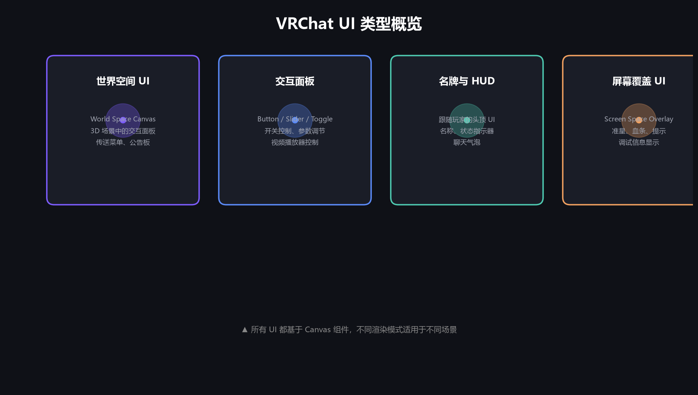
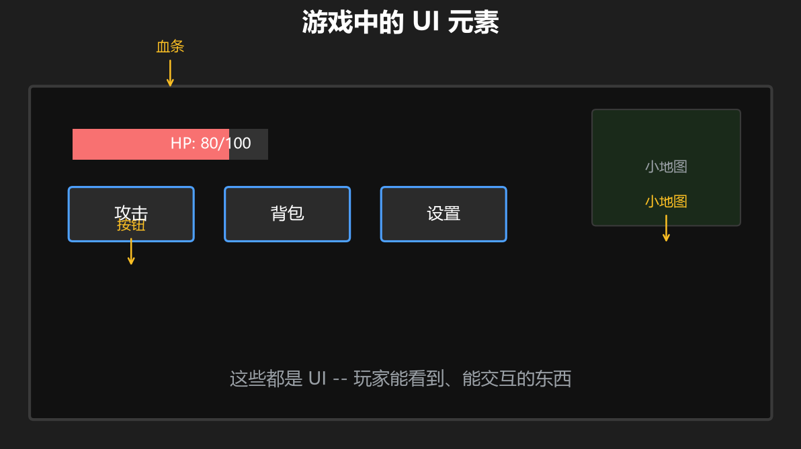
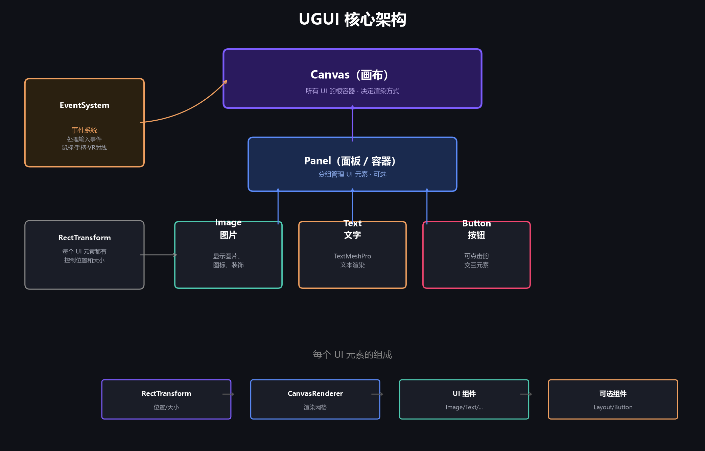
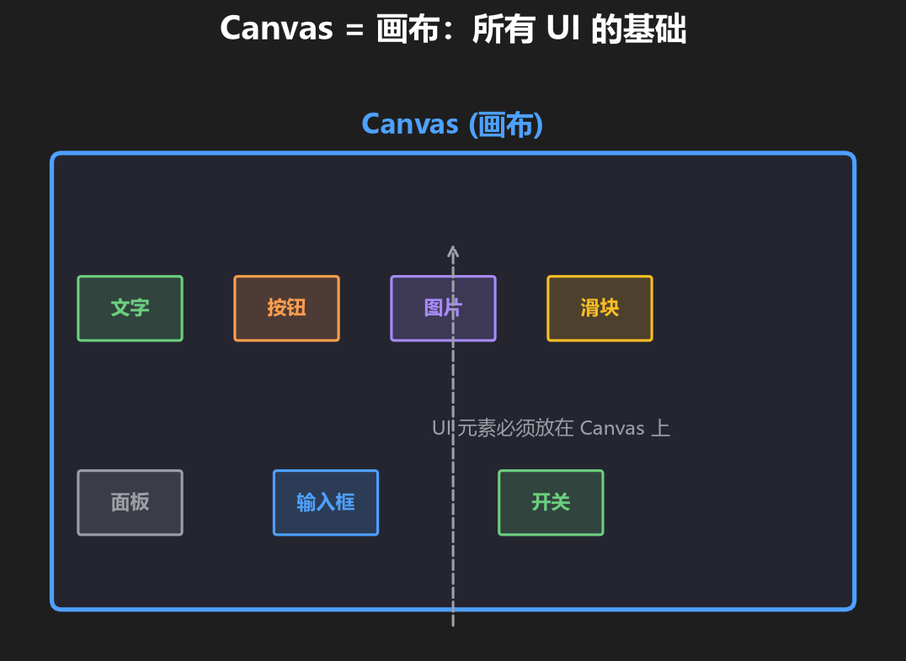
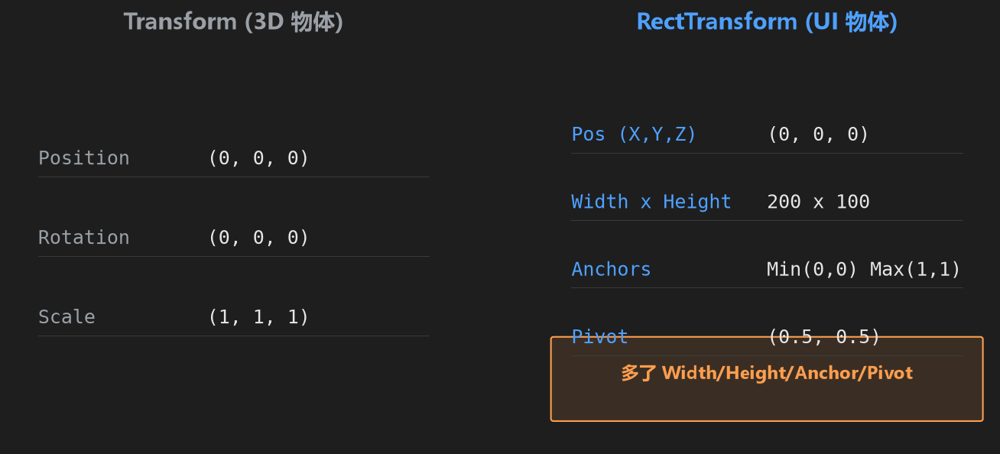

第 1 篇：UI 与 Canvas
这是专门为零基础写的 Unity UI 教程，面向 VRChat 世界开发。先建立“UI 到底是什么、Canvas 在中间扮演什么角色”的整体认识。
🎯 课程目标
- [ ] 知道 UI 在 VRChat 世界里有哪些常见用途
- [ ] 知道 Unity UI 的基本结构：Canvas → Panel → 控件
- [ ] 知道 Screen Space 与 World Space 的区别（后续会细讲）
- [ ] 能在项目里创建一个 Canvas 并看到它的子物体
1. UI 在 VRChat 里有什么用？
VRChat 世界里的 UI 不只是“按钮”。凡是玩家能看到、能点击的界面，都属于 UI：

图 1-1：VRChat 中常见 UI — 世界空间面板、交互面板、名牌/HUD、屏幕覆盖 UI

图 1-2：常见 UI 元素示例 — 按钮、进度条、文本框、图标
- 信息展示：世界规则、排行榜、公告板
- 交互控制：传送菜单、设置开关、小游戏面板
- 视频控制：播放/暂停、URL 输入
- 名牌与 HUD：头顶名牌、状态图标、聊天气泡
2. Unity UI 的核心：Canvas 画布
Unity 的 UI 系统叫 UGUI。所有 UI 元素都必须放在 Canvas 下面，Canvas 决定了 UI 怎么显示、显示在哪里。

图 1-3：UGUI 核心架构 — Canvas → Panel → Image / Text / Button

图 1-4：Canvas 是所有 UI 元素的“容器”
当你在 Hierarchy 窗口右键 → UI → 创建任意 UI 控件时，Unity 会：
- 如果场景里还没有 Canvas，自动创建一个 Canvas
- 自动创建一个 EventSystem（独立于 Canvas，处理鼠标/射线输入）
- 把新 UI 控件放到当前选中的 Canvas / Panel 下面
注意：EventSystem 和 Canvas 在 Hierarchy 里是平级，不是 Canvas 的子物体。把它删了，UI 点击就会失效。
3. UI 控件为什么和 3D 物体不一样？
3D 物体用 Transform，UI 元素用 RectTransform。RectTransform 多出了 Width/Height、Anchors（锚点）、Pivot（轴心），用来在 Canvas 里做自适应布局。

图 1-5：普通 Transform 与 RectTransform 的区别
锚点（Anchors）是 VRChat UI 里非常常用的概念，例如：
- 把按钮锚定在右下角，屏幕变化时它仍保持在右下角
- 把面板四个角锚定到父面板四个角，它会跟着父面板一起拉伸
这一篇只要先“知道有锚点这个东西”就行，后面做面板和弹窗时会反复用到。
4. Render Mode：屏幕 UI 还是世界 UI？
Canvas 的 Render Mode 决定 UI 放在哪里：
| Render Mode | 位置 | VRChat 世界推荐？ |
|---|---|---|
| Screen Space - Overlay | 永远贴在屏幕上 | 不用 |
| Screen Space - Camera | 贴在某个相机上 | 一般不用 |
| World Space | 像 3D 物体一样放在世界里 | VRChat 必须用 |
详细设置会在 第 7 篇：World Space Canvas 展开。现在只要记住：VRChat 世界里的可交互 UI 最终都要用 World Space Canvas。
5. 动手：创建一个空 Canvas
- 打开 Unity 场景，确认 Hierarchy 里没有 Canvas
- 右键 Hierarchy →
UI→Canvas - 观察 Hierarchy：Canvas 出现，旁边自动多了一个 EventSystem
- 选中 Canvas，在 Inspector 里找到
Render Mode，先保持默认的 Screen Space - Overlay - 右键 Canvas → UI → 随便创建一个 Image 或 Button，观察它成为 Canvas 子物体
自检清单
- [ ] 场景里有 Canvas 和 EventSystem
- [ ] 新创建的 UI 控件自动成为 Canvas 子物体
- [ ] 知道 EventSystem 和 Canvas 是平级的
- [ ] 知道 VRChat 世界 UI 最终要用 World Space